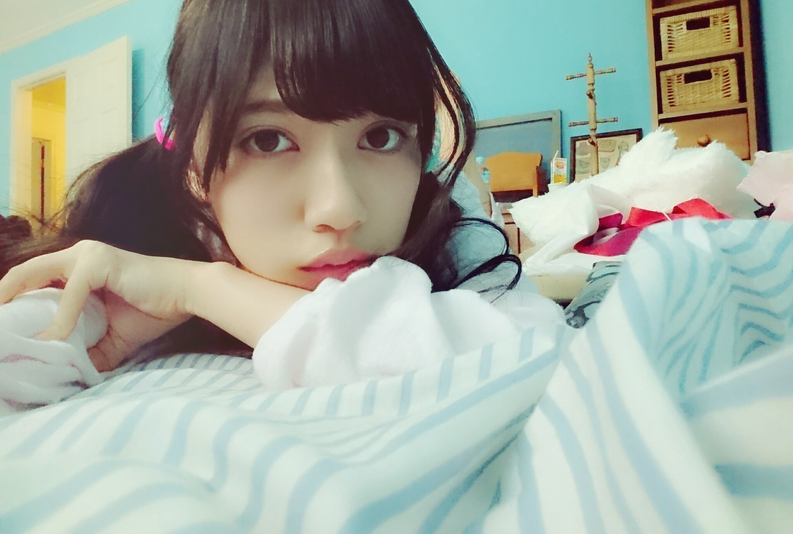
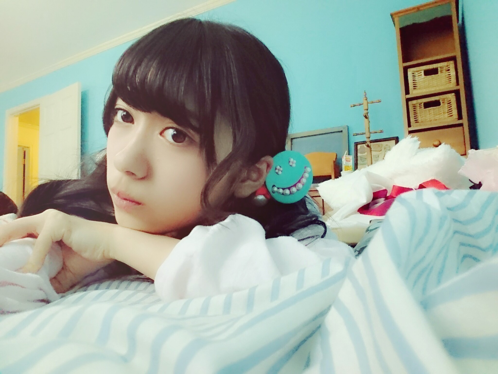
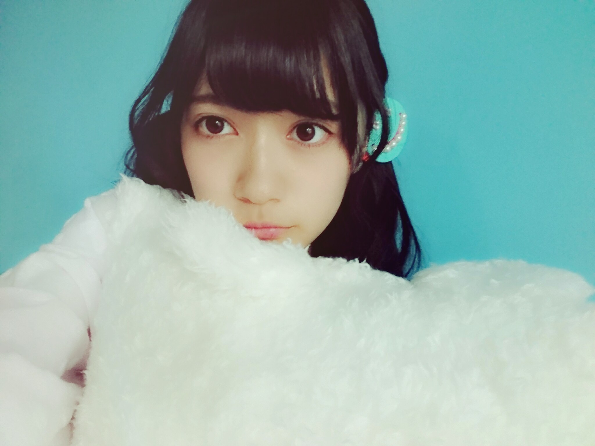
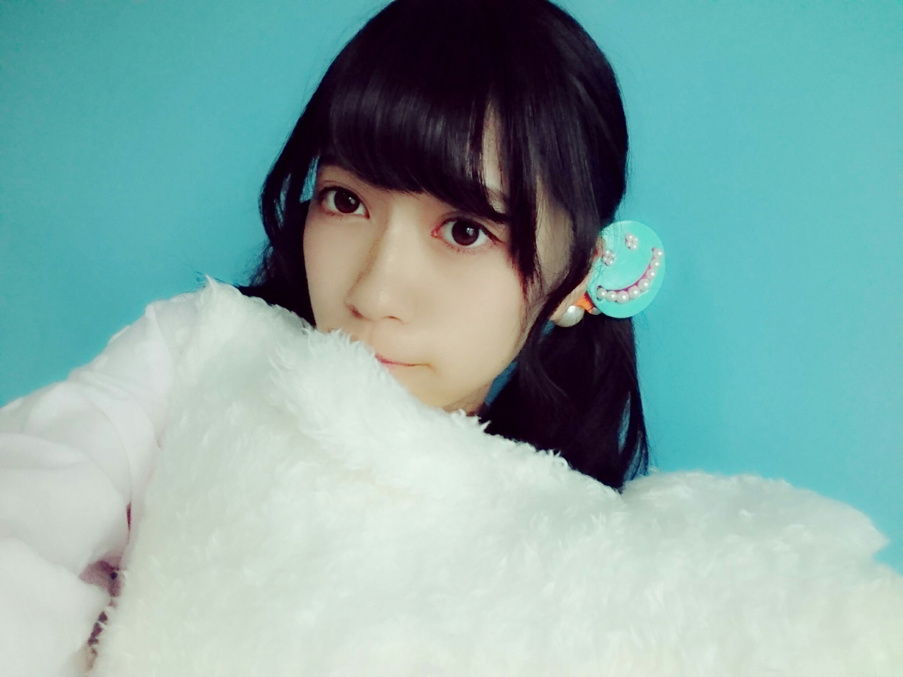
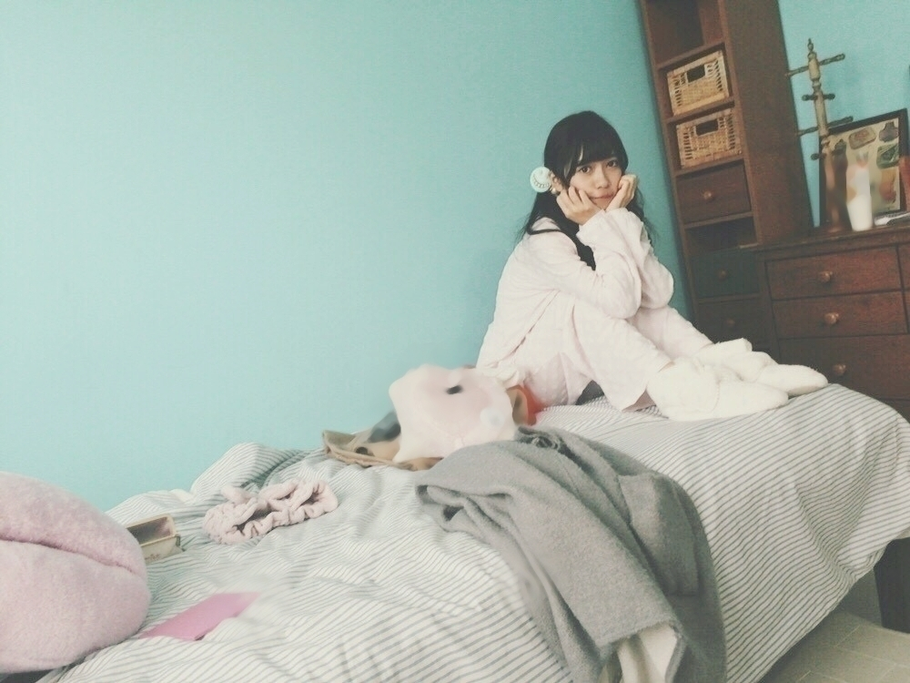

2016/0131Sunかいとう
寺田蘭世です( . .)"
お部屋の片付けをしましたお部屋が綺麗スッキリしたので気分もスッキリ
るんるんでございます( . .)"
お部屋のお片付けは
テトリスゲームみたい！
おはようございます
こんにちは
こんばんは


コメント返しを今回はします長いかもですが
私の色んな事しれるかもです( . .)"
ｰｰｰｰｰｰｰｰｰｰｰｰｰｰｰｰｰｰｰｰｰｰｰｰｰ
○これまで小さい頃とかよく呼ばれてたあだ名とかってあるんですか？
→乃木坂に加入してから
らんらんって初めてのあだ名でした
名前が珍しいからか
あだ名がありませんでした。
ただ、何故にらんらんだったのかはすごく初期の頃に
理由を書いたブログがあります
話すと長くなるので
よかったらこれを機に
過去のブログも覗いてください( . .)"
○ここで！☆質問☆
・蘭世ってどんなメイク道具使ってるの？
→メイク道具ですか
この質問が思ったより多くて可愛い女の子大好きだからテンションあがったよ
逆に皆のオススメも知りたいな( . .)"
リップは昔からすぐなくしちゃう人でして
この地球上に7本くらいは
テラダ使いかけリップが
落ちてる気がします、、、笑
ちなみに、蜂蜜リップが好きです美味しいです
○センター試験受けてましたw
コメントしたかったけどそこはセンター終わるまでなんとか自己を律して我慢しました。
質問なんですが、ファンの人が仮装していくとしたらどんな仮装がいいですか？
→お疲れ様です( . .)"
ブログをお預けしてたこと
をまず褒める
だからコメント返しさせて頂きました
本当にお疲れ様です！
仮装ですか
難しいですね
かわいい被り物が1番癒されるかな( . .)"
着けてくるの恥ずかしいかな
○蘭世って誰の前でも自分のことテラダって言うの？
家族の前とかでも？
→この前家のインターホンにテラダですって言っちゃった時は流石におかしいなって思いました。
でも、お食事中とかも
これテラダのとか言いますが
皆テラダなんだよね
○写真を撮るときのオススメなポーズは？
→テラダポーズ
意味はありません！
無意識に良くやってしまうんです
だからこれをテラダポーズって呼んでます
皆さんもぜひ( . .)"
○らんぜは旅に行きたい国はありますか？
理由も教えてくれれば嬉しいです！
→ロシアとタイです！
前回のブログにも書きましたが街並み好み
色が華やかな感じが
たまりません！
人生1度きり
色んな国にいってみたいです
○質問です〜
最近らんぜの中で「こいつは止まらんぜ！！」って思える食べ物ありますか？
ぼくは最近アロエヨーグルトが止まりません(=ﾟωﾟ)ﾉ
→チューインガムです
幼稚園の頃から大好きで
1つたべるととまらんぜになる食べ物です
○初コメをします。早速質問なんですが、次のシングルで握手券を取ろうと思うのですが、初握手なので、緊張して話せないかもですが良いでしょうか？不躾な質問ですみません。
またコメ残させていただきます。
→ありがとうございます！
初コメ嬉しいです
これからも宜しくお願い致します
このコメントも多かったですね！
私もアイドルファンで握手会に参加してた身なので
多少はファンの皆さんの気持ちもわかっているつもりですやっぱり緊張するものですよね( . .)"
でも、私もそんなにお話上手くないかもですが
らんぜの為に今日来て良かったって思ってもらえるよう私自身も楽しみながら
心掛けてます！！！！
初めての握手は
事故ったー
それも良き思い出です
程よい緊張感は大切だけど
緊張し過ぎていい事は
あまりない
これ最近自分の中の流行りです。
握手会に限らず
楽しんだ者勝ちです！！！
こんなに熱い話になってしまいましたが
待ってます( . .)"
○蘭世えええええ
ブログ更新ありがとう♡
今学校から帰ってきてすぐコメントしてる笑
もう最近蘭世好きすぎてやばいよ( ；∀；)←
握手会ね、高校生になるから初めて行けるんだけど6月4日の握手会(まだまだ先...)蘭世2.3.4部とったよ(o^^o)
初めての握手会、すごく楽しみ^^*
蘭世との握手も楽しみすぎて(((( ˙-˙ ))))ﾌﾟﾙﾌﾟﾙﾌﾟﾙﾌﾟﾙﾌﾟﾙﾌﾟﾙﾌﾟﾙ←
→ありがとうございます！
最近らんぜが好き過ぎてやばいに反応してコメントかえしちゃいました( . .)"
ありがとう
テラダも楽しみに待ってるよ？！
○いつも蘭世から元気もらってるし尊敬してます。
蘭世の性格なんども言うけど好きです！！
→らんぜから元気をもらってるこの言葉が何より一番嬉しいです
本当にありがとう！
そんな私の性格は
何かすみません( . .)"
自分で自分の性格は良くわからないですが
多分面倒くさい人間ですが
今後も何卒、宜しくお願い致します！
○らんぜちゃんは欅坂で気になってる子いる？？
→おだななさん！！！！！
ブログをいつも皆の拝見しててそのときは独特な志田さんも惹かれてたけど
けやかけをたまに見逃しちゃうけど観てて
もう、おだななさんしかってなった、、、
この前たまたま私のご贔屓お二人にあって
推しメンなんですーって
咄嗟に言ってしまった( . .)"
○あと！蘭世ちゃんに質問♡♡
ディズニーのポップコーンで何味がすき？？？
→ダントツでHoneyです
今販売されてないのもオッケーならクリームソーダです
ぜひ、Honey食べてみてください\( ö )/
○新世界ではどんな勢いを
巻きおこしたいですか？
→今まで誰も歩んだことの無い道を作る( `-´ )
昔からテラダ家でよく言った事なんですが
「真似される人であれ」って
私、小学校2年生の時誓ったんです。
だから、そういう人になりたいしそう有りたいです。
○二期生の仲間と出かけたり、食事などは行きますか？
→去年12月に鈴木絢音 佐々木琴子と私テラダでご飯に行って
そして最近また3人でご飯に行きました！
月イチで行けたらいいなーっとテラダは思ってます
また2人を誘うよ( . .)"
この2人にはお誘いの言葉をかけれる！
のほほんとできるし
何とも言えないけど
好きです( . .)"
○らんぜちゃん( ^ω^ )＊
初コメだよ〜！♡
質問募集してたから
コメントしちゃった！笑
うち、今年の10月に結婚式
するんだけどらんぜちゃんから
おめでとうのメッセージが
ほしいなっ(*^o^*)
もう、質問じゃないんだけど
いいかな？？♡♡
→初コメさん
ありがとう！！！！！
まぁ、すごくめでたい！
フライングですが
ご結婚おめでとうございます！！！
結婚式に参加した事ないからしてみたいな！
結婚式にお邪魔したい！
お祝いメッセージとかも
どんな言葉をお贈りすればいいのかもわかりませんが
結婚って素敵ですね\( ö )/
これから新たな人生のスタートですね
末永くお幸せに！！！！！
○宝塚初心者なのですが
テラダさんがおすすめするDVDってなにかありますか？
ちなみに
かなめ様主演のベルサイユのばらが気になっております
→かなめ様のベルばらいいですよ！！！！！
オススメします
ベルばらって
世間から見たザ・宝塚さんな世界だと思うので
初めてでも楽しめそう\( ö )/
○質問いいですかー？
蘭世さんはなんて呼ばれるのが一番好きですか？
→自分ではテラダって呼んでるけど
呼ばれるなら蘭世の方がいいな、、、( . .)"
○乃木坂入る前
AKBさんの現場通ってて
まゆゆが好きって言ってた蘭世だけど
AKBの好きな曲何かな？
→あり過ぎて困りますね
その質問！！！！！！
○初コメです！
普段どんな曲を聴くんですか？
→洋楽は産まれた時から聴いてます親の影響です
今どきの洋楽はわからないけど
80年代
70年代が好きです
日本の楽曲なら
これも親の影響で
竹内まりやさん！！
幼稚園児くらいの頃
車でドライブしたときに
よく聴いていたので
好きで今でも聴きます
椎名林檎さんは
ブログにも書いた事ありますが好きです\( ö )/
○蘭世さん！質問です！最近突然雪が降り始めましたけど、小さい頃から雪かきする習慣とかありました？僕の地域は雪が積もりすぎて大変です
→東京出身のもので
雪かきするほど積もったところを見た事ないんです、、、m(._.)m
みてみたい
雪かき、お気をつけて
○質問して蘭世のブログで返事とかしてもらいたいけどたくさん質問がくるだろうし、、、、
→コメントありがとうございます( . .)"
そんなこと言わないで下さい
まだまだ質問返しもしたいくらいむしろ物足りないです
世界人口
そこから携帯普及率を考えても私のブログを見てくれる人の人数なんて
まだまだまだまだまだまだ、、、まだまだまだまだまだまだまだまだまだまだまだまだまだまだまだまだまだまだまだまだまだまだまだまだまだまだまだまだまだまだ、、、まだまだまだまだまだまだまだまだまだまだまだまだ、、、まだまだまだまだまだまだまだまだまだまだまだまだ
過ぎます！
これからも一人でも多くの方に会うため
頑張ります！！！！
これからも
このブログを読んで下さっている皆様
宜しくお願い致します！！！
○蘭世こんにちは！
この間の集まれ侍ジャパン見たよ～
蘭世の知識量が想像以上でびっくりしました(ﾟДﾟ)
質問なんですが、蘭世が好きな、もしくはやってみたい野球のポジションはどこですか？？
→ありがとうございます！
褒められるの
嬉しいです
照れますありがとう( . .)"
ポジションですか
よく聞かれるんですが
全部好きですね
だってどこか1つ欠けても
野球じゃないし、、、
私は全部好きですよ！
○一番好きな時間は？
→1人で居るときです\( ö )/
○こんばんは。夢の国もサイコーだけどユニバも来てみてよ
→行きたいですね！
小学生の頃家族旅行で
ユニバさんに1回行ったことあったんですけど
もう記憶も薄れてて
ぜひ、行きたいです！！
○蘭世のオススメのブランドがもっと知りたい！！
→ありがとうございます
このコメントも3番目くらいに多かったな
ブログのコメント欄に
女の子が多いんだなーって思った\( ö )/
決まったブランドはないんです
お気に入りのブランドがあるってなんかちょっぴり大人っぽいイメージがあります
ちなみに、昔から古着が大好きです
○質問とはちょっと違うけど、蘭世のブログの写真は
拡大できるようにならないかな？
他のメンバーのはできるんだけど(TOT)
→コメントありがとうございます！
機種的にできません
たまに握手会などで質問されますが
でも、過去のブログの画像も有効期間がないため
高画質で保存できるので
良きかなと思います( `-´ )
○蘭世は絵本から飛び出してきたんですか？
→1分くらいどういう事か悩んだ、、、笑
そう言うことか
これはボケてるのか
真剣に絵本に似てる人でも居たのかなーとか
考えてしまいました( `-´ )
○きいちゃんも言ってたけど、2期生の中で悲シイタケとか流行ってんの？
→私はヤングガンガンさんの撮影現場で
「かなしいたけ」を
使ってからハマって
そのときは自分で考案したものとして使っていたのですが
きいちゃんブログで
「かなシイタケ」はサバンナさんが使っててみたいな
文を読んだとき
わーおってなりました
誰のネタとか知らないで使ってました、、、
でも私のかなしいたけは
茸のシイタケさんではなく
竹の「竹」なんです( . .)"
○日村賞受賞したら、
らんぜは何が欲しい？？
→乃木坂工事中でかりん、白石さん、橋本さんで対戦して橋本さんが勝った
白石さんの日村さんと揃いの部屋着
日村さんとお揃い
本気でいいなーって思いました！
○NEWSがとまらんぜ！の題材ってどうやって選ぶの？向こうの編集さんからの提案とか
→題材や文章も全て自分で考えております
これからも宜しくお願い致します( . .)"
○蘭世のNo. 1パンは何ですか！？
僕は、最近のNo. 1パンはあんパン！っと言っています^ ^
→どうしましょう
ピーナッツパンは昔から大好きなんですが
最近塩ロールパンに出会ってしまいました
○こんばんは。
大劇場でるろうに剣心が始まります。
らんぜちゃんは見に行きますか？
ご贔屓さんが退団して以来、
数年ぶりに大劇場へ観劇しに行こうかな？
と思ってます。
→観に行きたいのですが
チケットが、、、( . .)"
毎回チケットはなかなか取れないものですから
また、当日券とか並ぼうかな！
観に行きたいものですね
月城かなとさん
でも、ちぎさんは本当に
お美しい
360度美しい、、、
○モンハンは進んだ？
→そうなんですよ
メールでは言ったんですが
ブログではまだ書いてないですよね
テラダモンハン始めたんです
訓練みたいな所で
頑張っておりますが
もう、心折れそう( . .)"
戦闘系ゲームが下手っぴすぎて
どなたか助けてください。
○好きなお寿司のネタは何ですか？
→えんがわさん
○蘭世は眼球フェチですが、乃木坂46のメンバーの中で誰の眼球が一番好みですか？
→カナさんの瞳の色は
今まで見た事ない
凄い綺麗な色です
透明感があって日本人離れした薄茶
ぱっと思いついたのは
カナさんですかね\( ö )/
○今、寺田さんが好きなお茶は何ですか？（ミルクティーとかほうじ茶とか鉄観音とか）
→緑茶、ジャスミンティー
○蘭世は夢の国の中で一番好きな乗り物(ショーパレ含む)は何？？
ちなみに俺はBigBandBeatが大好き！！
あとイースターのパレードでうさたまぽんするのも大好き(*´∀｀)
→コメントありがとうございます！
この質問も多かった印象です
カントリーベア・シアターは本当に昔から大好き
うさたまぽん\( ö )/を
皆でやってるのをみてて
幸せな気持ちになります
昔やっていた
リロ＆スティッチのパレードでダンス参加できる奴好きでした
私が小学校2年生くらいのときにやってたんですが
○乃木中でもやってたんですが
好きな匂いってなんですかー？
→コメントありがとうございます！
好きな香りは
冷蔵庫の香りです
共感してくれる人！
ｰｰｰｰｰｰｰｰｰｰｰｰｰｰｰｰｰｰｰｰｰｰｰｰｰ
告知をさせて頂きます！
今年に入って初の月だったから初告知だ！！！
30日
エンタメNext中元日芽香さん、寺田蘭世
2月分
9日
ボムさん
UTB＋ vol.30さん
10日
MARQUEEさん
19日
NOGIBINGO！5 Blu-ray&DVD BOX発売！
22日
BRODYさん
27、28日
13枚目シングル握手会
in京都
ニッカンスポーツ・コム「NEWSがとまらんぜ」寺田蘭世
毎週金曜日配信
寺田蘭世が乃木坂46内や芸能界のニュースを貪欲にキャッチし、らんぜの独特な感覚でどんどん発信していきます！
ｰｰｰｰｰｰｰｰｰｰｰｰｰｰｰｰｰｰｰｰｰｰｰｰｰ
いつもいつも
沢山のコメント
本当にありがとうございます( . .)"
たまに
コメント読んでるかな？とか
読んでくれてたら嬉しいです等のコメントがありますが
読んでるに決まってるじゃないですか！！！！！！
むしろいつも楽しみにしてますし
コメント読んでると
気持ちが落ち着くっと言うか
この気持ちは何とも言えませんが
目に見える愛だなって思っております
ブログ更新ありがとうとも言われますがこちらこそ
コメントありがとうございますです( . .)"


これからも末永く
宜しくお願い致します( . .)"

撮影できたパジャマだけを
載せるの巻
2016/01/31 21:46


コメント(853)
こちらこそ、
今後に期待しています。
ずっと、よろしくです。
今度個握はじめていくね
とまらんぜぇぇぇぇ
かわいい！
日刊のやつ毎回読んでるよ♪
次は4月だね。゜(´⊃ω⊂｀)゜。
なんか気分よさそうにみえた！笑
ブログ更新ありがとう
握手会いきます！
いつもかわいい
応援してるよ‼︎！
うちわに「寺」と書いて
握手会参加してる者です！
14thの個握もうちわ下げて行くから
よろしくね！！！！
これからも蘭世の勢いとまらんぜー！
体は大丈夫？
気をつけてね！
今度の握手会もテスト週間だけどそんなに気にせず蘭世に会いに行くよ！！
楽しみにしてます。
俺の願い叶えてくれ！！
今年もよろしくお願いします笑笑
明日試験一発目！
緊張するぞー
|陰|ω-)q陰から応援してるゼ
|ω･`)ｱﾉ~...蘭世との握手が楽しみ過ぎて待てませんﾝｱﾞｱﾞｱﾞｱﾞｱﾞｱﾞｱﾞｱﾞ
|ω･`)ｱﾉ~...蘭世との握手が楽しみ過ぎて待てませんﾝｱﾞｱﾞｱﾞｱﾞｱﾞｱﾞｱﾞｱﾞ
楽しみしていました。
ありがとう
早く握手会いきたいな(´・ω・｀)
これからもよろしくね！
5月5日京都個握いくよぉぉぉぉぉ
衣装とかリクエストしていいのかな？
こんど握手会はじめてらんぜのレーン並ばせていただきます！
4月まで会えないと思うと寂しいしつらすぎてる⤵︎⤵︎
会えなくても気持ちは想ってます、、ダイスキ
１４枚目の個握3次蘭世外れちゃったよー！
4次で当たるかなー？
初めてらんぜの握手にいったんだけど思ってたよりお姉さん雰囲気がてでて驚きました笑
兄と一緒に行ったのですが壁にぶつかるというハプニングがあって心配してたらんぜがめちゃめちゃ可愛かったです！
また握手会に行こうと思ってるのでよろしくです！
5月15,29個別とったよー！！
もう5月が楽しみー！！
モンハンはどう？
そろそろ慣れてきたかな？？
お姉さんたちがモンハンベテランだから色々聞くといいよー
また個別でモンハンの話しようかなー
14thの活動もがんばってねー！！
更新時間が46分なのは持ってますね。
この企画でらんぜの事多く知れて更に好きになりました(*_*)
14枚目の握手会も楽しみにしてるね！
ブログ更新ありがと！！！！
コメントする